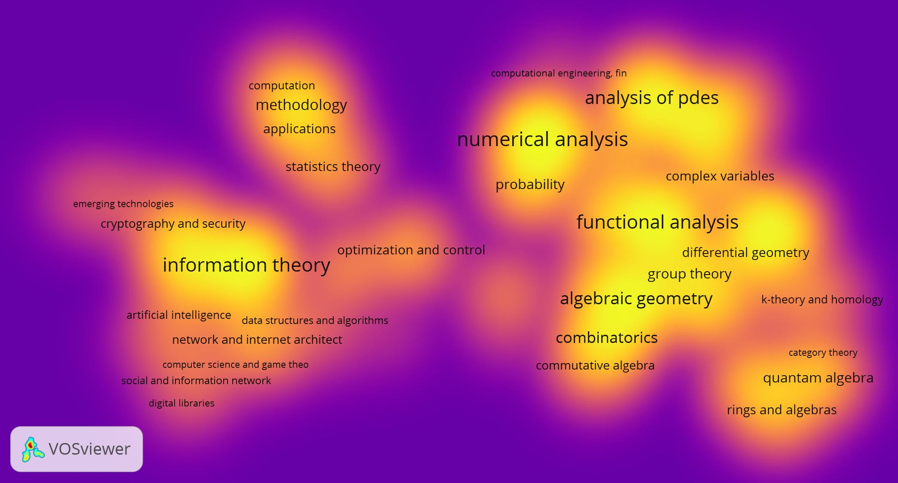
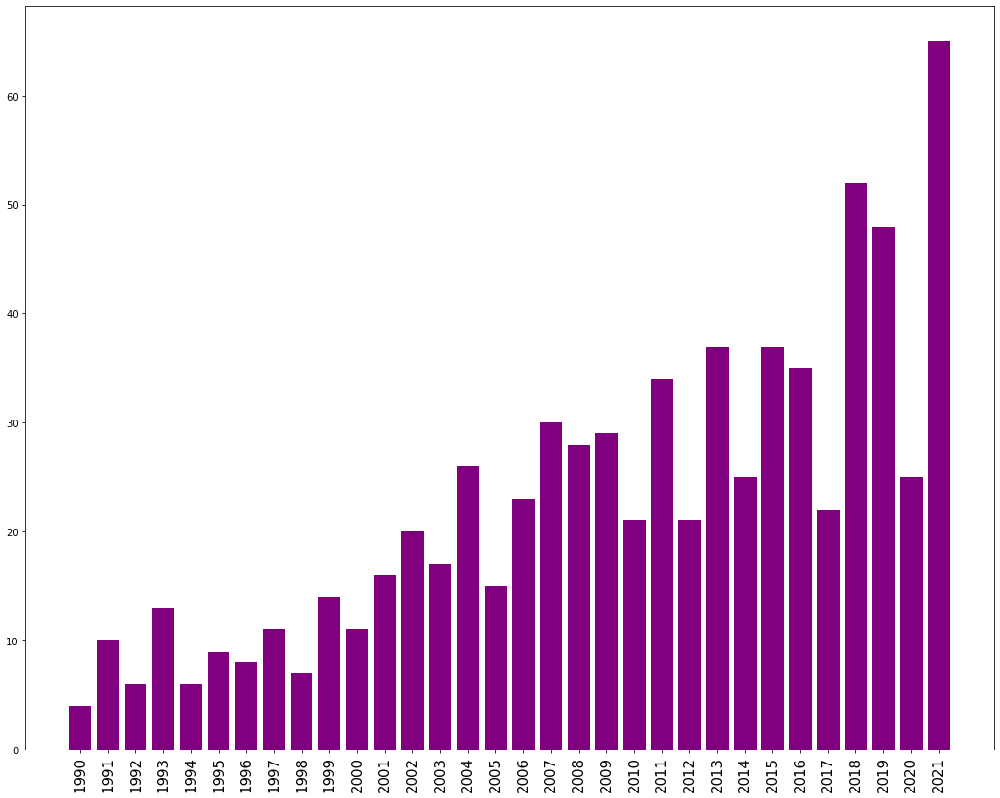
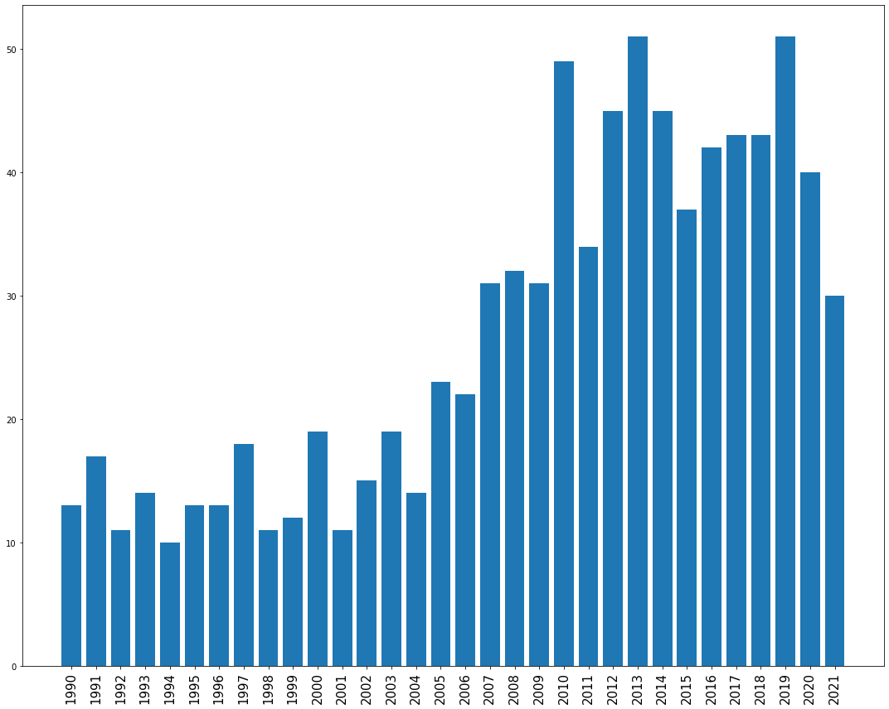
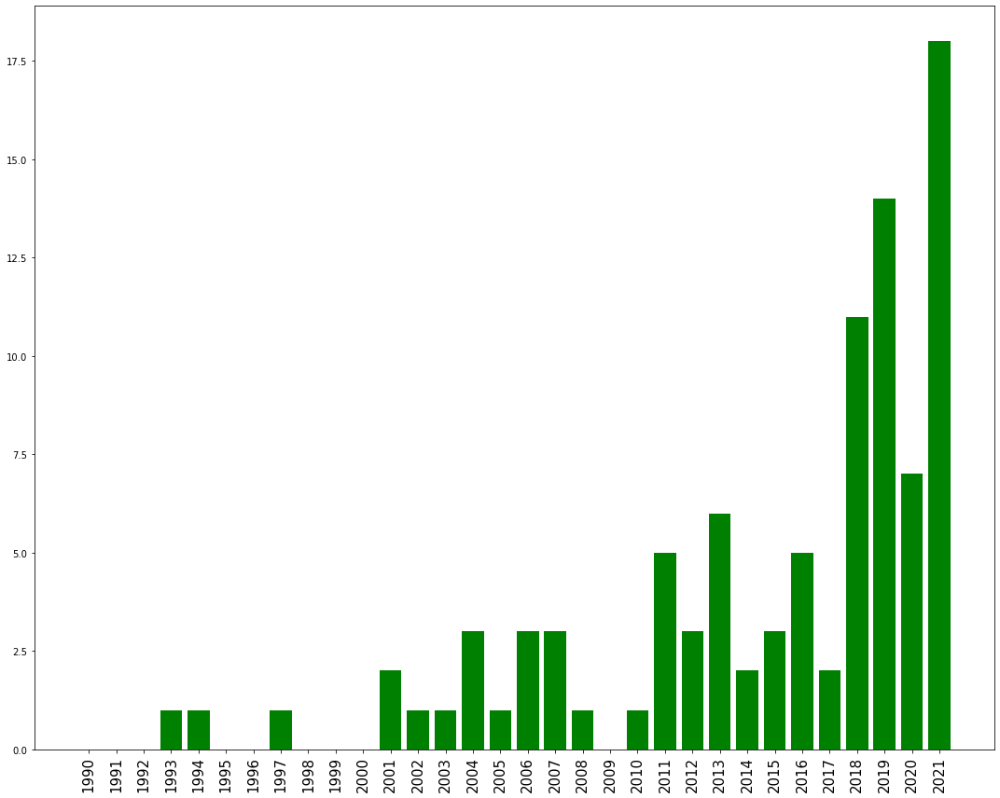

Bean Queens TAMIDS Data Science Competition Submission
By: Mansi Bezbaruah, Jacob Mashburn, Arpan Pal, Ben Warren, Thomas Yahl
Executive Summary
We aim to visualise the current state of collaborations between the Texas A&M Departments of Mathematics, Statistics and Computer Science and identify sub-fields of each where these collaborations occur. Cornell University’s arXiv is an open-access archive of scholarly articles from each of these three areas which classifies articles by a refined system of tags. We gathered arXiv submissions published by Texas A&M University authors and grouped articles according to their corresponding tags. This data was then visualised to show connections between sub-fields of each field and which sub-fields may benefit from future collaborations with neighbouring areas.
Problem Statement
As stated on their website, the arXiv is an open-access archive of over 2 million scholarly articles in the fields of Mathematics, Computer Science, Statistics, etc. Mathematics has significant collaborations with every other field that is featured on arXiv and so we studied the collaborations that Mathematicians at Texas A&M University have among its own sub-fields and with other fields. Therefore, our problem statement is:
How can we visualise the collaborations at Texas A&M University that occur between sub-fields of mathematics and non-mathematical fields?
Datasets and Data Exploration
Our goal was to collect research publication data for papers published by the Mathematics, Statistics, and Computer Science departments of Texas A&M University which included the subfields of each discipline that the papers in our data set correspond to. Initially, we used data from Dimensions (https://app.dimensions.ai), a competition dataset, to find publications with authors from Texas A&M University. This data did not include subfield information, however. The data from arXiv (https://arxiv.org), an outside dataset, includes which subfields its publications correspond to, but it does not consistently keep track of the institutions that its publications are affiliated with. To collect our data, then, we cross-referenced each paper from the Dimensions database to see if it had a corresponding entry on arXiv from which we could collect its subfield data. We used arXiv’s free API to conduct this step. The data we collected this way required some cleaning: a paper could have multiple drafts on arXiv, or authors could publish under different names, for instance. Our data set is made up of all Texas A&M publications that we found listed on arXiv.
Methodology
Following is a timeline of our project:
Visualisation and Interpretation

Figure 1: Heat map of the popularity of different subfields of Mathematics, Statistics and Computer Science.
Figure 2: Collaboration network among different subfields of Mathematics, Statistics and Computer Science. The link width is proportional to the amount of collaborative publications between those two areas.
Figure 3: This picture above visualises the collaboration among different subfields of Mathematics, Statistics and Computer Science and also colours them depending on time. There are three clusters of areas from the departments of Mathematics, Statistics and Computer Science. An interesting observation about this data is that the cluster for the department of Mathematics is larger and has more publications compared to other two departments, but most of the collaborations are among different subfields of Mathematics. One other thing we notice is that the Mathematics department has some popular and relatively old sub areas like Combinatorics, Algebraic Geometry, Functional Analysis etc. but the Computer Science department has the areas such as Machine Learning and AI, which are also popular but relatively new. Another interesting observation we made is that emerging popular areas such as Machine Learning and AI have comparatively more collaborations with different subfields and other fields.

Figure 4: This bar graph represents the inter departmental collaborations between Mathematics and Computer Science over a period of about the last 30 years. We would like to point out a few interesting observations that we made from this. The amount of collaborative work between Mathematics and Computer Science has an overall increasing trend. The number of collaborations reached a sort of plateau around 2011-2016 but it saw a strong increase in around 2017 onwards. This, we believe, is due to the popularity of emerging fields like Machine Learning and AI.

Figure 5: This bar graph represents the inter departmental collaborations between Mathematics and Statistics over a period of about the last 30 years. As the broad field of data science incorporates elements of statistics and several subfields of applied mathematics, this graph may show a correlation with the rise in popularity of data science itself. Since, in the past decade, most Fortune 100 companies have taken an interest in, if not invested heavily into, data mining and analysis for the purposes of strategy refinement (among others), this rise may be a response to the increased demand for employees who specialise in such fields.

Figure 6: This bar graph here represents the inter departmental collaborations between Statistics and Computer Science over a period of about the last 30 years. One interesting thing we observe from this graph is that Statistics and Computer Science did not used to have too many collaborative works but the amount of collaborations between CS and Stats have started to grow in recent times. One reason for this we think is that the Statistics department here is comparatively new and have started to expand only recently and another reason we think is the popularity of ML and AI. These two research areas have become increasingly popular recently and it is around the same time when the collaborations between CS and Stats started picking up.
Figure 7: This video represents the collaboration network among different fields through the last 31 years. We used relative collaboration strength and not absolute collaboration strength. The width of the line connecting two fields is the relative collaborative strength.
Conclusions and Recommendations
We saw from the data that mathematicians at Texas A&M University are collaborating more among subfields than with collaborators in Computer Science and Statistics. Moreover, we see that collaborations with Computer Science and Statistics have increased over the past few years, especially with the more newly emerging fields such as machine learning. Even so, we can identify that some subfields of mathematics such as Numerical Analysis are more active collaborators with other fields.
During the collection of our datasets, we noticed that arXiv does not have “institution name” as one of the required fields when submitting preprints, so we had to go through a very time consuming process to filter out researchers at Texas A&M University. We would recommend APIs and scholarly databases to include institution names. Moreover, the arXiv API has several bugs that required us to include a mandatory sleep time between two consecutive calls, which made collecting the data slow. We didn’t use an API for the Dimensions data as it was downloadable, but it didn’t keep track of subfields.
Initially, we wanted to collect data for more scientific fields and include Physics, Biology, Material Sciences, et cetera, however due to the slow speed of our data collection and filtering process, we had to scrap those plans. We must also note that many of the papers we found on Dimensions did not have corresponding entries on arXiv. In particular, arXiv seems more popular in Mathematics than it does in other disciplines, and older papers show up less often on arXiv as well. This means that we cannot reliably conclude which fields of Mathematics have more or less collaborations with non-Mathematical fields as our collaboration data is incomplete. For future work, we would like to explore APIs and databases that have field labels like arXiv, but also allow for a more smooth data collection so we can visualise our networks better.